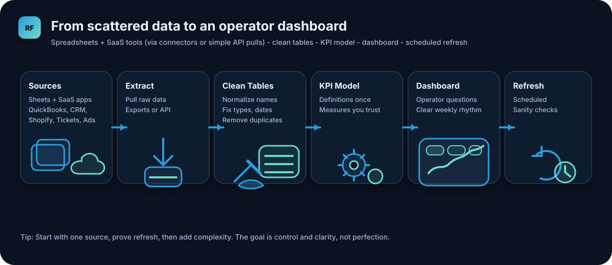

Quick skim: tickets + CRM + SLA
TL;DR - Service performance and retention
This page is the quick skim. If this matches your situation, you can jump into the full build details.
TL;DR
- Best for: Service-led SMBs who need SLA visibility, backlog control, and early warning on at-risk accounts.
- Connects: Zendesk or Freshdesk (tickets), CRM (account tier and renewals), a sheet (SLA targets).
- Answers: Are we meeting SLAs? What is breaking? Which accounts are at risk due to support pain?
- You build: Clean ticket tables, SLA KPIs, at-risk flags, and a dashboard that refreshes reliably.
- Time to first version: 3 to 5 hours if connectors exist, a weekend if you are setting up from scratch.
If you are an owner/operator, the only thing you need to decide first is the weekly questions you want answered. The rest is a repeatable build.

The pattern stays the same across every business: connect sources, clean once, define KPIs, refresh reliably.
What you get at the end
- A dashboard that answers operator questions in minutes.
- A refreshable pipeline (exports or APIs) you control.
- KPIs defined once, so numbers stay consistent.
Ready to dive deeper?
Use the full example page for the exact sources, tables, KPIs, and dashboard layout ideas.